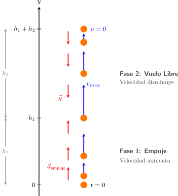
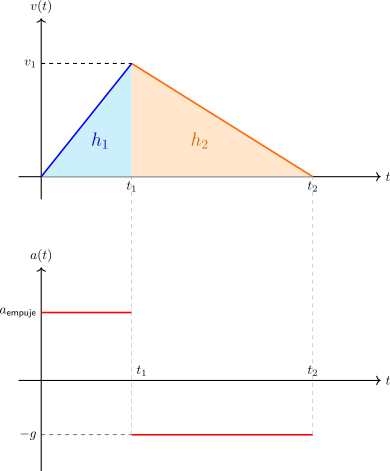

Movimiento Vertical#
Supuestos del Modelo#
Para modelar este problema de forma analítica, consideraremos los siguientes supuestos físicos:
Aceleración constante en el empuje: Asumimos que la mano aplica una fuerza constante sobre el objeto, lo que genera una aceleración constante (\(a_{\text{empuje}}\)) hacia arriba durante el trayecto \(h_1\).
Resistencia del aire nula: Despreciamos los efectos de la fricción con el aire.
Aceleración de gravedad (\(g\)): Una vez que el objeto abandona la mano, la única aceleración que actúa sobre él es la de gravedad (\(g \approx 9.81\) m/s²), dirigida hacia abajo.
{kind=link}

Gráficos de velocidad y aceleración#
A continuación, se representan las curvas de velocidad y aceleración en función del tiempo para ambas fases del movimiento. Se puede observar geométricamente cómo el área bajo la curva en el gráfico de velocidad corresponde a los desplazamientos \(h_1\) (fase de empuje) y \(h_2\) (vuelo libre).
{kind=link}

Interpretación de las gráficas: áreas y pendientes#
Al graficar el movimiento, podemos observar propiedades fundamentales de la cinemática:
Gráfica de Velocidad vs. Tiempo (\(v-t\)):
Pendientes: La pendiente de esta gráfica representa la aceleración. Durante la Fase 1, la pendiente es positiva y constante (el valor es \(a_{\text{empuje}}\)). Durante la Fase 2, la pendiente es negativa y constante (el valor es \(-g\)).
Áreas: El área bajo la curva de velocidad representa el desplazamiento (\(\Delta y\)). El área del primer triángulo formado (base \(t_1\), altura \(v_1\)) es exactamente igual a \(h_1\). El área del segundo triángulo (base \(t_2\), altura \(v_1\)) es exactamente \(h_2\).
Gráfica de Aceleración vs. Tiempo (\(a-t\)):
Áreas: El área bajo la curva de aceleración representa el cambio de velocidad (\(\Delta v\)). El área del rectángulo positivo correspondiente a la Fase 1 es igual a \(v_1\) (la rapidez que gana). El área del rectángulo negativo de la Fase 2 es \(-v_1\) (la rapidez que pierde hasta detenerse por completo).
Cálculo de áreas y pendientes#
Calculando las áreas bajo la curva en el gráfico de velocidad, es decir, el área de los triángulos obtenemos las siguientes relaciones:
Y calculando las pendientes en el mismo gráfico se obtiene:
A partir de estas ecuaciones obtenemos los parámetros en función de las distancias \(h_1\) y \(h_2\):
Simulación: Lanzamiento Vertical
Ingresa los valores de h₁ y h₂, y observa el comportamiento de las gráficas.